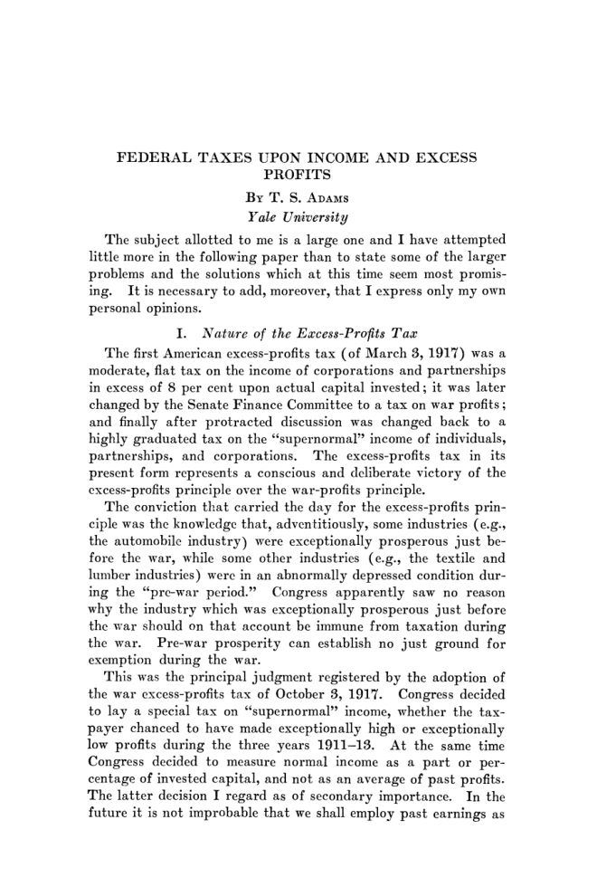

T. S. Adams e o imposto sobre lucros extraordinários
Leitura: 8 min
T. S. Adams examina os impostos de guerra de 1917: por que o imposto sobre lucros acima do normal venceu o imposto sobre lucros de guerra, quem escapa dele, como medir o capital e por que impostos são um instrumento tosco.


O primeiro imposto americano sobre lucros extraordinários, de 3 de março de 1917, era moderado e uniforme: incidia sobre a renda de sociedades anônimas e sociedades de pessoas acima de 8% do capital efetivamente investido. A comissão de finanças do Senado o transformou num imposto sobre lucros de guerra. Depois de longa discussão, o Congresso voltou ao princípio original, agora com um imposto fortemente graduado sobre a renda “supernormal” de pessoas físicas, sociedades e empresas, aprovado em 3 de outubro de 1917.
T. S. Adams, da Yale University, abriu a reunião de Filadélfia com esse imposto e com as mudanças no imposto de renda. Avisou que falava só em nome próprio. O texto, publicado no suplemento de março de 1918 da American Economic Review, é ao mesmo tempo uma defesa do princípio e um inventário de defeitos da lei.
Lucro extraordinário ou lucro de guerra?
O que decidiu a questão, diz Adams, foi saber que algumas indústrias, como a de automóveis, estavam excepcionalmente prósperas antes da guerra, e outras, como a têxtil e a madeireira, deprimidas. Medir o excesso pela diferença entre o lucro da guerra e o de 1911–13 isentaria quem já lucrava muito e puniria quem saía de uma crise. O Congresso preferiu tributar a renda acima do normal, medida como percentual do capital investido.
A diferença tem consequência para a duração do imposto. Um imposto sobre lucros de guerra é temporário por natureza: sua base fica mais ilógica a cada ano e tende a desaparecer com a guerra. Um imposto sobre a renda acima de um retorno normal pode durar indefinidamente, porque representa a parte do Estado no êxito supernormal de cada empresa e mede, de forma aproximada, o valor das oportunidades e do ambiente que a comunidade oferece.
O imposto fere a capacidade de pagar?
A crítica mais séria, diz Adams, é a de que o imposto viola o princípio da capacidade de pagar. Duas empresas com o mesmo capital e o mesmo lucro, uma de pequenos acionistas, outra de milionários, pagariam o mesmo, com efeitos muito diferentes sobre os donos. Adams responde que essa leitura olha o contribuinte só como consumidor. Há variantes válidas do princípio que olham o contribuinte como produtor e reconhecem a empresa como unidade.
“O Estado e a comunidade são sócios silenciosos de toda empresa.” (“the state and community stand as silent partners in every business enterprise”)
O imposto inglês, lembra, é tratado pelos tribunais da Inglaterra como a parte do Estado nos lucros da empresa privada. Como na contribuição de melhoria, a capacidade de pagar dos acionistas não precisa ser considerada. Adams vê ainda usos futuros: depois da guerra, o imposto poderia servir aos adversários do protecionismo como alternativa às tarifas e, se o protecionismo vencer, como meio de recuperar parte dos lucros que a proteção cria. Combinado à regulação de preços, que tende a dar retornos excessivos aos produtores mais bem situados, tornaria os resultados mais equitativos. Sua maior fraqueza seria render pouco em anos normais.
Quem escapa do imposto?
O imposto alcança lucros de empresas e salários, mas não a renda do investidor que vive de seus títulos. Adams não vê razão para tratá-lo melhor que quem ganha com o próprio trabalho ou arrisca tempo e capital no negócio. Propõe duas correções: ajustar a dedução de 7% a 9% sobre o capital aos diferentes retornos “justos” de cada setor e criar no imposto de renda uma alíquota adicional sobre dividendos, juros, royalties e outras rendas asseguradas.
Sobre os salários, a cláusula de 8% foi incluída para não isentar o advogado e o presidente de banco enquanto o agricultor pagava. Adams diz não conhecer resposta satisfatória à pergunta que a motivou, mas prefere uma alíquota graduada sobre a renda pessoal acima de uma isenção liberal. A desigualdade maior está entre a sociedade anônima e a sociedade de pessoas: o sócio paga sobretaxa sobre toda a sua parte nos lucros, retidos ou não, e a empresa paga só o imposto normal sobre o que retém. A lei tentou compensar com alíquota normal de 6% para empresas, ante 4% para pessoas, deduções menores e um adicional de 10% sobre lucros não distribuídos, cheio de exceções.
O que é capital investido?
A definição de capital investido é a base de toda a lei. A crítica usual é que ela parte do investimento original, que nada significa numa empresa madura. Adams acha a crítica exagerada: a lei reconhece reservas integralizadas e lucros acumulados, e em não menos de 70% dos casos, calcula, o valor contábil do capital representa seu valor justo. O problema está nas empresas cujo capital real superou muito o legal, por valorização ou por intangíveis criados com publicidade, que só são reconhecidos se houve reorganização.
O remédio seria um órgão de equalização, inspirado no conselho de árbitros da lei inglesa, a válvula de segurança do imposto britânico. Nos Estados Unidos, a seção 210 da lei poderia cumprir esse papel se aperfeiçoada: o Tesouro calcularia o imposto de um caso duvidoso pela relação média entre imposto e renda de empresas representativas do mesmo ramo. Sobre a escolha entre capital e lucros de antes da guerra, Adams conclui que o capital, no caso médio, é a expressão resumida dos lucros normais, lucros normais capitalizados, e que o difícil é começar certo.
O que mudou no imposto de renda?
A lei de guerra trouxe melhorias que a associação vinha recomendando: isenções menores, deduções por filhos e dependentes, informação na fonte em lugar de cobrança na fonte, fim da dedução do imposto pago no ano anterior. Outras mudanças preocupam Adams. A pior é a regra que tributa dividendos às alíquotas do ano em que os lucros foram acumulados, o que fará muitos dividendos de 1918 pagarem as alíquotas baixas de 1916 e criará problemas administrativos insolúveis. Também falta dedução para obsolescência e amortização de instalações de guerra, o que atrasava a construção de fábricas pedidas pelo governo.
Impostos ou empréstimos?
Os impostos, diz Adams, têm três propósitos: arrecadar, repartir com equidade o custo do governo e reprimir produção e consumo. Com alíquotas altas, os três entram em conflito. Como instrumento de repressão, o imposto é ruim; quando se quer conter o desperdício ou as indústrias não essenciais, controles diretos, como racionamento, prioridades, restrição de crédito e requisição de trabalho e matérias-primas, funcionam melhor.
“Pode-se matar um homem com um machado cego.” (“you can kill a man with a dull axe”)
Adams vê na lei uma vitória da boa economia e pede cuidado para não desfazê-la com impostos tão extremos que provoquem reação, como ocorreu com o imposto de renda da Guerra Civil, revogado e esquecido por quase quarenta anos. A preferência dos economistas por impostos, diz, vinha daquela guerra, quando o crédito público era frágil e o sistema tributário pesava sobre os pobres; em 1917, o crédito estava ao par, o sistema bancário era moderno e o peso recaía sobre os ricos. Admite que empréstimos produzem mais inflação que impostos, mas conclui que as grandes guerras continuarão a ser financiadas sobretudo por empréstimos enquanto as leis tributárias forem imperfeitas, e que o remédio direto contra a inflação é a boa prática bancária.
Na minha leitura
Na minha leitura, o texto se destaca por tratar o imposto sobre lucros extraordinários como problema de medida. Tudo depende de definir um retorno normal e um capital investido, e Adams mostra, caso a caso, como cada escolha da lei cria vantagens para um tipo de empresa ou de contribuinte: o investidor sobre o trabalhador, a sociedade anônima sobre a de pessoas, a empresa reorganizada sobre a conservadora.
A segunda lição é a separação entre os propósitos do imposto. Ao distinguir arrecadação, equidade e repressão, e ao dizer que a terceira é mais bem servida por instrumentos diretos, Adams oferece um critério que continua útil: antes de escolher um tributo, perguntar qual dos três objetivos se quer atingir e se o imposto é de fato o instrumento adequado para ele.
Glossário
- Renda supernormal
- lucro que excede o retorno considerado normal sobre o capital investido.
- Imposto sobre lucros de guerra
- imposto sobre a diferença entre os lucros do período de guerra e os de um período-base anterior.
- Capital investido
- base legal sobre a qual se calcula o retorno normal: capital integralizado, reservas e lucros acumulados.
- Intangíveis
- ativos sem existência física, como marcas, clientela e reputação.
- Informação na fonte
- obrigação de quem paga rendimentos de informar o fisco, em vez de reter o imposto.
- Amortização de instalações de guerra
- dedução do custo de fábricas construídas para a guerra e sem uso previsto depois dela.
Fontes
- Federal Taxes Upon Income and Excess Profits — T. S. Adams (Yale University) (pp. 18–35). JSTOR · Internet Archive (PDF)
- Edição completa, com os demais artigos: Nº 151 do Arquivo.
Documento em domínio público (EUA, publicado antes de 1931), via JSTOR Early Journal Content e Internet Archive. Resumo e comentário do autor deste site, sem afiliação com a American Economic Association. Encontrou um erro? Escreva: a correção é publicada no próprio texto, com data.
← Commons e o fim do laissez-faire ↑ Nº 151 · Filadélfia, 1917: lucros extraordinários, terra e o fim do laissez-faire